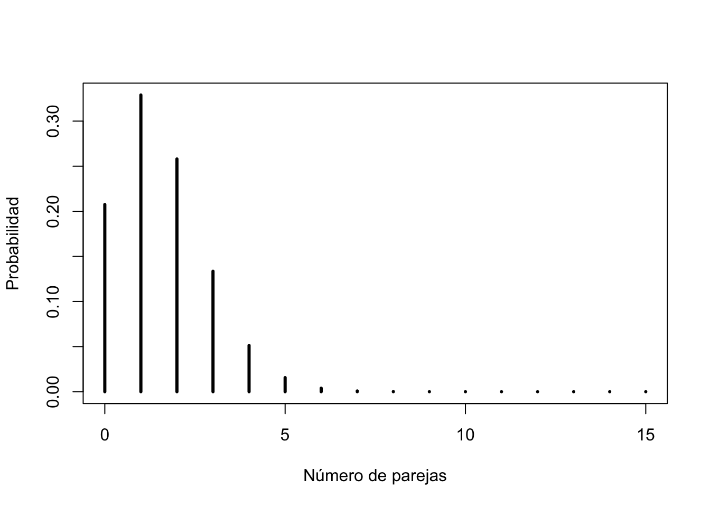

Inferencia Estadística y Pruebas de Hipótesis
2.1.Inferencia Estadística y Prueba de Hipótesis
Definiciones
Ver definiciones en el libro, y las siguientes entradas en el glosario del curso:
2.1.1.Hipótesis Estadísticas
Objetivos
Construir hipótesis que puedan ser probadas estadísticamente
La observación de un fenómeno en el mundo biológico es usualmente muy interesante, pero cuando tratamos de explicarlo es cuando realmente estamos haciendo un trabajo científico. Es aquí donde interviene la formulación de una hipótesis adecuada.
Ejercicios
Elaborar hipótesis formales sobre un tema asignado, partiendo de una pregunta y planteando una premisa y una predicción, y que pueda ser comprobada mediante observaciones y/o experimentación.
Hipótesis Estadísticas
Para probar una hipótesis de manera estadística, debemos primero convertir la hipótesis formal en un par de hipótesis mutualmente excluyentes: la hipótesis nula, que se representa \(H_0\), y la hipótesis alterna, que se representa \(H_a\) (o con un número, \(H_1\)). Solamente la \(H_0\) es la que se prueba directamente mediante estadísticas, y en un experimento representa la falta de efecto por parte de los tratamientos o condiciones experimentales; también puede representar lo esperado según un modelo probabilístico (Normal, Poisson, et c.).
Ejemplos
En el libro de Havel et al. (2019): Table 6.2 Some Examples of Null and Alternative Hypotheses.
Toda hipótesis nula genera una distribución de probabilidades, y cualquiera que sea esta distribución, está asociada a la hipótesis nula. La hipótesis alterna es todo aquello que no sea la hipótesis nula, y son mutuamente excluyentes. Es decir si una es correcta la otra no puede serlo, y entre ambas se cubren todas las posibilidades.
2.1.2.Decisiones Estadísticas y Potenciales Errores
Objetivos
Conocer las probabilidades de rechazar la hipótesis nula y la de equivocarnos
En el ejemplo 5.7 del libro, observamos que la probabilidad de que una pareja heterocigota recesiva, tenga sus tres hijos con fibrosis cística (FC) es de 0.0156; podemos decir que en 100 parejas heterocigotas del alelo FC, con tres hijos, esperamos que entre una y dos parejas tengan los tres hijos con FC.
Ahora bien, si en 15 parejas heterocigóticas, de un total de 100 con tres hijos, los tres tienen FC, ¿será algo que puede ocurrir al azar, según las reglas de la genética clásica? O, ¿existirán otros factores que determinan la FC en la población de la cual se obtuvo la muestra? Y si fueran 3 de 100, ¿es suficiente para rechazar que hay una segregación al azar de los alelos?
Con la información anterior podemos formular las siguientes hipótesis estadísticas: \[H_0 : parejas\ con\ tres\ hijos\ con\ FC \leq 2\] para el caso de que sea un proceso puramente aleatorio de segregación de alelos y herencia simple.
\[H_a : parejas\ con\ tres\ hijos\ con\ FC > 2\]
para el caso en que intervengan otros factores, además de la genética Mendeliana.
Mediante la función binomial, podemos calcular la probabilidad (p(x)) de que el evento “tres hijos con FC” (p = 0.0156) ocurra en x número de parejas, en contraposición a los otros eventos (q = 0.9844) posibles (0, 1, o 2 hijos con FC), de un total de 100 parejas heterocigotas recesivas de tres hijos (k):
# para x = 15
tresFC <- dbinom(15, size = 100, prob = 0.0156)
sprintf("probabilidad de tres hijos con FC en 15 de 100 parejas = %.2e", tresFC)## [1] "probabilidad de tres hijos con FC en 15 de 100 parejas = 5.25e-11"# para x = 3
tresFC <- dbinom(3, size = 100, prob = 0.0156)
sprintf("probabilidad de tres hijos con FC en 3 de 100 parejas = %.4f", tresFC)## [1] "probabilidad de tres hijos con FC en 3 de 100 parejas = 0.1336"# para x = 2
tresFC <- dbinom(2, size = 100, prob = 0.0156)
sprintf("probabilidad de tres hijos con FC en 2 de 100 parejas = %.4f", tresFC)## [1] "probabilidad de tres hijos con FC en 2 de 100 parejas = 0.2580"# para x = 1
tresFC <- dbinom(1, size = 100, prob = 0.0156)
sprintf("probabilidad de tres hijos con FC en 1 de 100 parejas = %.4f", tresFC)## [1] "probabilidad de tres hijos con FC en 1 de 100 parejas = 0.3289"Los resultados muestran una probabilidad muy baja de que 15 parejas de 100, con tres hijos con FC, se dé de forma aleatoria, asumiendo que la hipótesis nula de que se cumple con la genética mendeliana solamente. Por otra parte, encontrar tres parejas de 100, no tiene una baja probabilidad de ocurrencia (en comparación con lo esperado, una o dos parejas) asumiendo que solo actúa la genética mendeliana y el azar.
parejas <- 0:15
plot(parejas,dbinom(parejas,size=100,prob=.0156),
type='h',
ylab='Probabilidad',
xlab ='Número de parejas',
lwd=3)
Figura 1. Distribución de probabilidades binomiales para diferentes números de parejas con tres hijos con FC (p = 0.0156), de un total de 100 parejas heterocigóticas recesivas para FC.
Los resultados en la gráfica nos muestran que a medida de que el valor observado/medido se aleja de lo más esperado (que sería la \(H_0\)), la probabilidad de que ocurra un mayor número de parejas con tres hijos con FC es menor, y en valores extremos (15 parejas) es extremadamente baja. Si nuestra medición es confiable, podemos pensar que la \(H_0\) no se sostiene en este último caso, y la \(H_a\) puede ser la alternativa.
Valor de probabilidad (p-value) y nivel de significancia de la prueba (\(\alpha\))
El valor anterior de probabilidad para 15 parejas con hijos con FC, es la probabilidad en esta prueba y con esta distribución de probabilidades, de obtener un valor extremo, asumiendo que la hipótesis nula es correcta, y es lo que encontraremos en las pruebas estadísticas como p-value (en R a veces como Pr).
Pero ¿cuán baja debe ser esa probabilidad para poder decir que nuestra medición no se ajusta o rechaza la hipótesis nula al alejarse mucho de esta? En muchos procedimientos estadísticos, la probabilidad para aceptar o rechazar la \(H_0\) es 0.05 o 0.01. A esta probabilidad se la conoce como el nivel de significancia o \(\alpha\). Este valor de probabilidad debe establecerse al inicio de nuestra investigación, para no entrar en decisiones sesgadas al momento de aceptar o rechazar \(H_0\), como veremos a continuación.
Dificultades en la Decisión sobre la \(H_0\)
El rechazo de \(H_0\) al obtener un valor de p, puede llevarnos a conclusiones contradictorias si no establecemos de antemano un valor de \(\alpha\) adecuado al tipo de estudio o procedimiento estadístico con el que estamos trabajando. Por ejemplo si obtenemos un valor de p = 0.02, podemos rechazar la \(H_0\) si \(\alpha = 0.05\), pero no si establecemos un \(\alpha = 0.01\) . Por esto es importante siempre reportar el valor de p, y no solamente indicar si se rechazó o no la \(H_0\) .
Lo anterior nos muestra una de las características que más nos dificulta el manejo de las estadísticas en nuestro quehacer en las ciencias: la omnipresencia de la incertidumbre.
Errores Tipo I y Tipo II
Mediante las pruebas estadísticas tomamos la decisión de aceptar o rechazar la \(H_0\), y por otra parte esta puede ser verdadera o falsa. Por lo tanto hay cuatro posibles situaciones, dos correctas y dos incorrectas.

tomado de https://www.bartleby.com/
Cuando se rechaza la \(H_0\) y esta es verdadera, cometemos un error Tipo I, y su riesgo lo determina el valor de \(\alpha\), el cual se establece antes de realizar la prueba. Un error Tipo II lo cometemos cuando fallamos en rechazar la \(H_0\) cuando esta es en realidad falsa. La probabilidad de este tipo de error se denomina \(\beta\).
A continuación un ejemplo más concreto de lo que estamos describiendo, para el caso de una hipótesis nula de negatividad para un ensayo clínico:

Figura 2. Ilustración de los errores Tipo I y Tipo II, para una \(H_0\): prueba negativa de embarazo.
Poder de la Prueba
Se denomina poder de la prueba a la probabilidad de poder rechazar una hipótesis nula falsa, y su valor es \(1- \beta\). El valor de \(\alpha\) lo seleccionamos de antemano, pero \(1-\beta\) no lo conocemos de antemano, y está influenciado por los siguientes factores:
- el error Tipo I \((\alpha)\)
- la diferencia entre los estadísticos (media por ejemplo) que queremos discriminar; a esta diferencia también se la conoce como tamaño del efecto \((\delta)\); y
- el tamaño de la muestra

Figura 3. Ilustración de cómo al variar \(\alpha\) cambia el valor de \(\beta\), y el poder de la prueba, \(1 - \beta\).
2.1.3.Pruebas de Hipótesis: alguna terminología para recordar
Objetivos
Conocer el significado de la terminología y conceptos para realizar pruebas de hipótesis estadísticas
Términos claves para recordar
- nivel \(\alpha\)
- hipótesis alterna, \(H_a\)
- probabilidad \(\beta\)
- valor crítico del estadístico de la prueba
- prueba de hipótesis
- hipótesis nula, \(H_0\)
- valor p, p-value o Pr
- poder de la prueba, \(1 - \beta\)
- estadísticamente significativo
- inferencia estadística
- prueba estadística
- teoría
- hipótesis formal
- error tipo I
- error tipo II
Efecto o diferencia significativa
Usualmente empleamos el término “significativo” para referirnos al resultado de una prueba, que nos permite rechazar la \(H_0\) con a un nivel \(\alpha\) predeterminado. Es importante señalar que lo significativo es dentro del contexto de la prueba estadística (estadísticamente significativo), ya que la palabra significativo tiene otras acepciones, como llamativo, por ejemplo.
Pasos para Completar una Prueba de Hipótesis
Adaptado de Box 6.2 del libro de Havel et al. (2019)
- Establecer claramente la pregunta o predicción que se quiere responder o probar.
- ¿Cuál distribución describe el tipo de muestras obtenidas? Algunos ejemplos:
a. probabilidades: distribución binomial
b. contaje en tiempo o espacio: distribución de Poisson
c. medias muestrales: distribución normal
- ¿Cuál es la prueba estadística apropiada?
- Formular las hipótesis nula \(H_0\) y alterna \(H_a\).
- Establecer el nivel \(\alpha\) al cual o debajo del cual rechazar \(H_0\).
- Calcular el estadístico correspondiente, de la prueba, usando la(s) muestra(s).
- Calcular el valor apropiado de p del estadístico de la prueba, usando una tabla o programa estadístico.
- Tomar una decisión acerca de \(H_0\), al comparar \(\alpha\) y el valor de p. Por ejemplo, si p es menor o igual a \(\alpha\), rechazar \(H_0\).
- Interpretar la decisión, a la luz de la pregunta o hipótesis formal original.